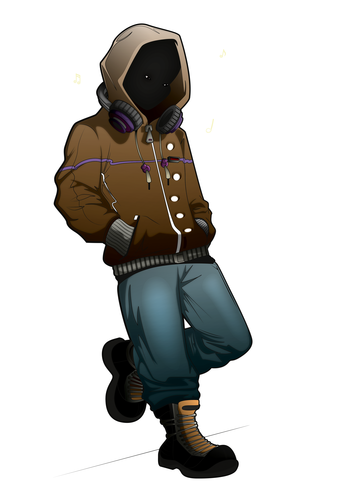

Territory 04 · Peace
Haven
Episode 04
Rain fell.
Soft. Constant.
Que didn't move.
Didn't need to.
Stillness isn't empty—
it's full of everything you've been avoiding.
He stayed…
until calm felt natural.
